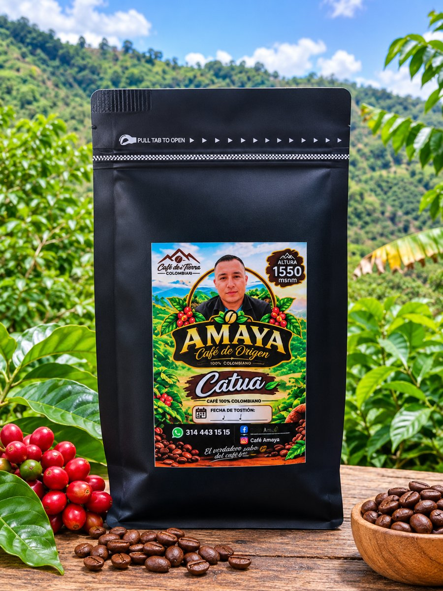

Muchas marcas dejan el café premium para exportación. Amaya Cafe no. Lo enviamos a cualquier lugar de Colombia.
Así llega el café hasta tus manos, paso a paso.

4Amaya Café de Origen viene de Marquetalia, Caldas. Muchas marcas reservan el mejor café para exportarlo; aquí el café se queda en Colombia: es 100% colombiano.
Del cultivo a la bolsa, cada paso se piensa para que lo disfrutes en tu casa, en cualquier ciudad del país.
Pasa las páginas para ver cada preparación.
Toca una receta para ir directo a su página.
El filtrado lento de toda la vida: un café limpio y aromático.
Un café con cuerpo, fácil de hacer y sin filtros de papel.
Se prepara en la nevera mientras duermes. Suave y poco amargo.
Un café intenso y concentrado, ideal para tomarlo solo o con leche.
Para los días de calor, con el dulce que tú elijas.
El desayuno de siempre: café fuerte con leche caliente.
Café intenso con leche espumada, sin máquina.
Café con chocolate y leche: el postre que se toma en taza.
Helado de vainilla bañado en café caliente. Listo en minutos.
Café con leche condensada, servido en capas.
Café frío y espeso, batido con hielo.
Café concentrado sobre agua tónica con hielo: burbujeante y refrescante.
Una aguapanela con café: dulce, caliente y muy de casa.
Café frío con jugo de naranja: fresco y diferente.
Un filtrado en cono para sentir el aroma y los sabores del grano.
Usamos tus datos (nombre, teléfono, ciudad, dirección y correo) únicamente para gestionar y entregar tu pedido y para comunicarnos contigo por WhatsApp sobre él.
No vendemos ni compartimos tus datos con terceros, salvo con la empresa de envíos, solo lo necesario para que el paquete llegue a tu dirección.
Puedes pedir en cualquier momento que consultemos, corrijamos o eliminemos tus datos escribiendo a amayacafedeorigen@gmail.com, conforme a la Ley 1581 de 2012 de Colombia (protección de datos personales).